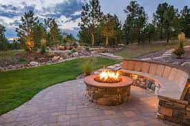
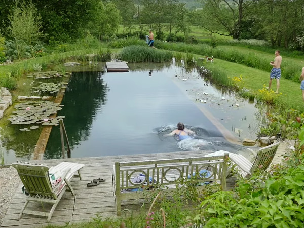
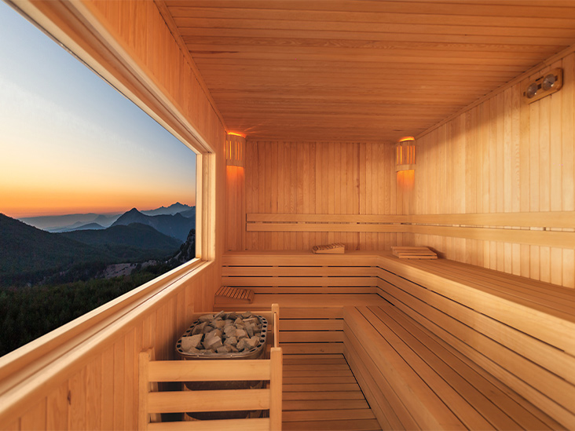
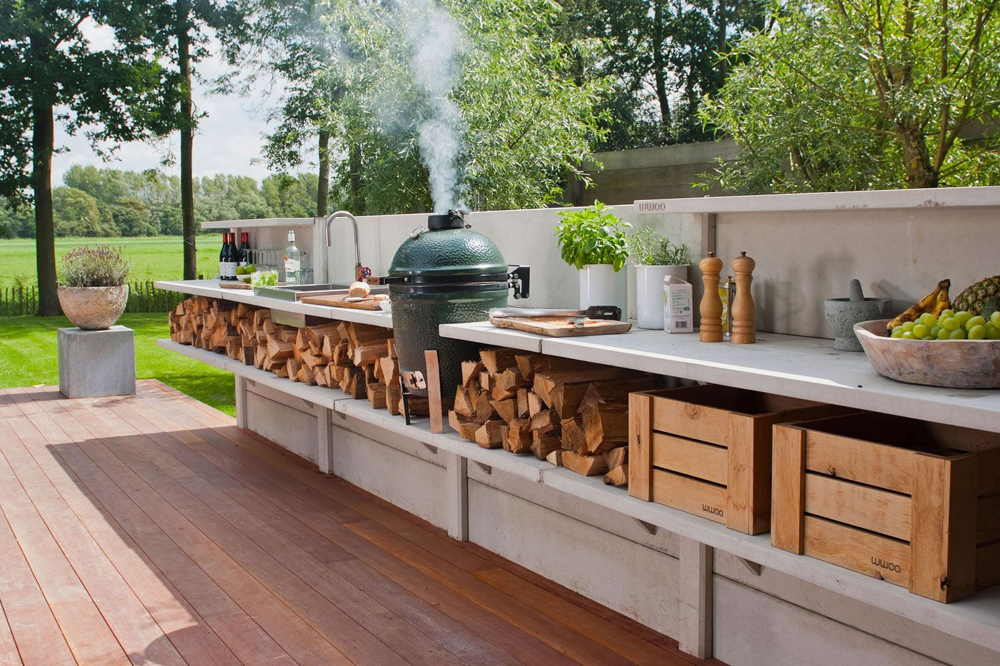
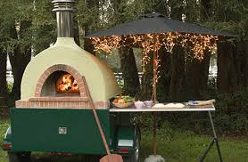
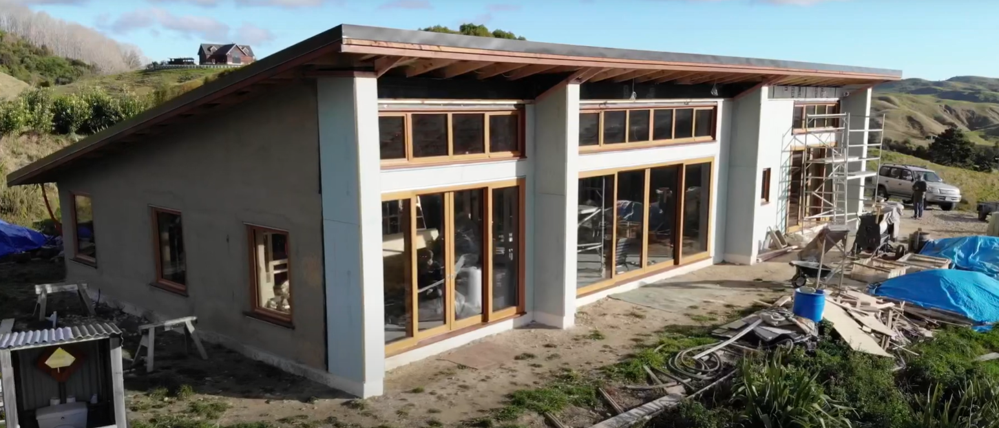
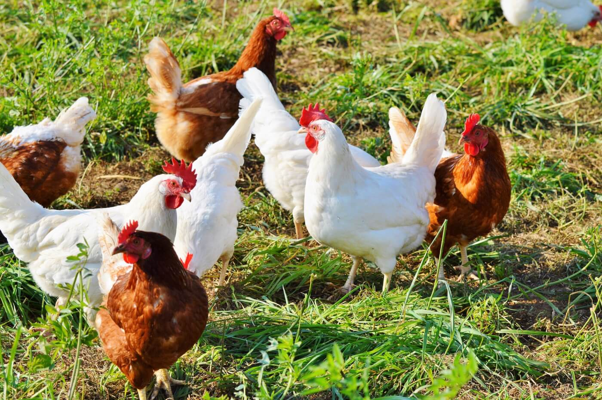
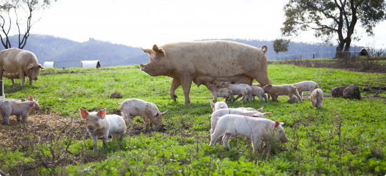
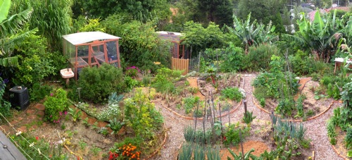
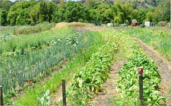

HOMESTEAD
Welcome to the dream homestead set to be a reality!
The goal is to create a multi generational community.
Living on a piece of land in seperate living quarters with shared spaces.
Sharing work load like animal and garden care.
Have a small business selling goods at the market or online like: medicinal herbs & mushrooms, homemade clothing, crafts, pottery.
Set up to care for all ages of the family - can live independently but nearby to family.
By living together we can have animals and still go on holidays.
Education on the property for children like animal care, crafts, gardening, music. Langauge learning spaces
Facilities
Fire pit outside

Natural Swimming Pool

Sauna Room

Outdoor Kitchen and pizza oven


Businesses
Build an income from what we do on the homestead, selling it weekly at the farmer's market or online
- Pottery
- Medicinal Mushrooms and Plants at the market
- Making clothing
- Arts and Crafts
Houses
Building multiple homes with straw bales so everyone has a seperate living space.
Building with straw bales is incredibly cheap, energy efficient and fast.
Passive solar design like the image using thermal heat capture of big rocks, building in the side of a hill, and tilting the roof.

Equiped with solar power for off grid living. Something like the tesla powerwall to store the solar energy.
Animals
By living together we can have animals and still go on holidays.
A Dog
Chickens - Eggs, Meat
Goats - Milk, Cheese, Meat
Pigs - Meat



Food

We will learn to grow lots of food and be (hopefully) self sufficient.
Nut trees
Walnut
Carob
Pistachio
Pecan
Fruit trees
Mulberries
Figs
Cherries
Peaches
Pears
Apricots
Lemons
Olives
Berries
Black berries
Rasberries
Blueberries
Growing the trees on contour with food forest design (multi level storey of plants).
Market Garden
All our vegetables for eating

Mushrooms
Medicinal and Food varities
Medicinal
Nettle
Composting:
1. Hot Compost piles
2. Compost tea brewers
3. Cold compost piles